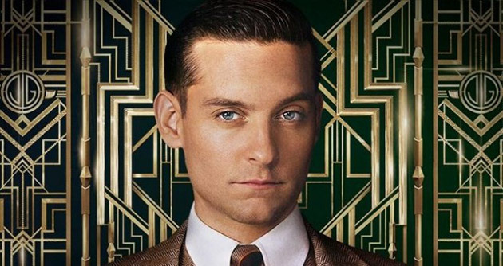
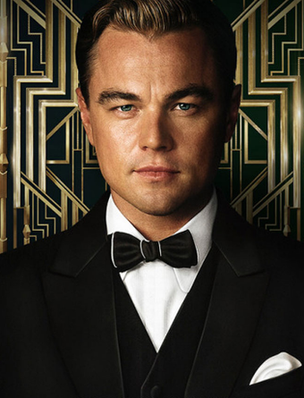
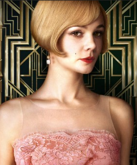
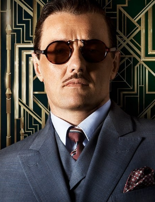

Characters from The Great Gatsby
Nick Carraway-narrator of the story and is honest, logical, and trustworthy.

Jay Gatsby-Protagonist of the story, who is very optimistic, prosperous, and deceptive.

Daisy Buchanan-Female character that faces conflict between two men, Tom and Gatsby. She is good-looking, wealthy, and materialistic

Tom Buchanan-Married to Daisy, and Gatsby's opponent(antagonist). He is affluent, arrogant, hypocritical, and racist.
